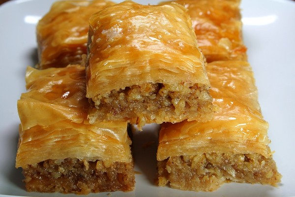

Info
InfoRecepter
250 g fryst turkisk filodeg (1 platta = ca 42 g)
Sockerlag
Olja
Krossade valnötter
Sockerlag lagar du till att du lägger i lika mycket mängd socker som vatten och kokar ihop det. Du ska använda en msk citronsyra eller klämma i lite citronsaft för att sockerlaget ska bli flytande.6 dl socker
2,5 dl vatten
1 msk citronjuice
2 msk apelsinjuice
